1 · Function words vs. Content words
Content words (also called lexical words) carry the core meaning of the sentence — the “dictionary” information. They are an open class: new ones are created all the time (internet, selfie, download). Nouns, main verbs, adjectives and adverbs belong here. They are normally stressed and keep their full vowel sounds.
Function words (also called grammatical words) carry very little meaning on their own; they exist to show the grammatical relationships between the content words. They are a closed class: articles, prepositions, pronouns, auxiliaries, conjunctions, determiners and particles. They are normally unstressed and appear in weak forms with a reduced vowel (usually /ə/ or /ɪ/).
Examples
- Content:
table /ˈteɪbl̩/
running /ˈrʌnɪŋ/
beautiful /ˈbjuːtɪfl̩/
quickly /ˈkwɪkli/ - Function (strong → weak):
and /ænd/ → /ənd/ → /ən/
of /ɒv/ → /əv/
for /fɔː/ → /fə/
to /tuː/ → /tə/
have /hæv/ → /əv/
but /bʌt/ → /bət/
Main differences
- Meaning: content = lexical meaning; function = grammatical meaning.
- Class: content = open (new words appear); function = closed (fixed list).
- Stress: content words are usually stressed; function words are usually unstressed.
- Vowels: content words keep full vowels; function words reduce to weak forms.
- Connected speech: function words are the ones most affected by assimilation and linking (e.g. an illuminati → /ənɪluːmɪnˈɑːti/).
2 · Citation form vs. Connected speech
Citation form is the isolated pronunciation of a word — the way it appears in a dictionary. It is produced slowly, carefully and with clear articulation, with the word's full (strong) form and full vowels, and with no influence from neighbouring sounds.
Connected speech is how words are actually pronounced in everyday, natural conversation. Words are not produced one by one; they form a continuous sequence of sounds in which each sound is affected by the sounds around it. This produces:
- Assimilation — ten players /ten ˈpleɪəz/ → /tem ˈpleɪəz/
- Linking — an apple /əˈnæpl̩/
- Weak forms — and /ænd/ → /ən/
- Gemination — black cat /blækːæt/
3 · Linking
Linking (also called liaison) is the smooth joining of the final consonant of one word to the initial vowel of the next word, inside the same thought group. Instead of stopping after each word, the speaker pronounces the final consonant as if it began the following word, so the speech flows continuously.
The pattern is: consonant + vowel (C + V) across a word boundary.
- an apple /ən ˈæpl̩/ → /əˈnæpl̩/
- turn it off /tɜːn ɪt ɒf/ → /ˈtɜːnɪtɒf/
- pick it up /pɪk ɪt ʌp/ → /pɪkɪtʌp/
- not at all /nɒt ət ɔːl/ → /nɒtətɔːl/
- come in /kʌm ɪn/ → /kʌˈmɪn/
- find out /faɪnd aʊt/ → /faɪnˈdaʊt/
- take it easy /teɪk ɪt ˈiːzi/ → /teɪkɪtˈiːzi/
- leave it alone /liːv ɪt əˈləʊn/ → /liːvɪtəˈləʊn/
4 · Gemination
Gemination (also called twinning or doubling) happens when the same consonant sound ends one word and begins the next one. Instead of pronouncing two separate consonants, the speaker holds the articulation once and lengthens it — the two sounds merge into one long consonant.
- black cat /blæk kæt/ → /blækːæt/
- big game /bɪg geɪm/ → /bɪgːeɪm/
- hot tea /hɒt tiː/ → /hɒtːiː/
- good day /gʊd deɪ/ → /gʊdːeɪ/
- some money /sʌm ˈmʌni/ → /sʌmːʌni/
- ten nails /ten neɪlz/ → /tenːeɪlz/
- this Saturday /ðɪs ˈsætədeɪ/ → /ðɪsːætədeɪ/
- book case /bʊk keɪs/ → /bʊkːeɪs/
- night time /naɪt taɪm/ → /naɪtːaɪm/
5 · Assimilation
Assimilation is the process by which a sound changes in order to become more like a neighbouring sound. It makes speech smoother and easier to pronounce, because the articulators do not have to move as far or as fast between two positions. The change is usually in the place of articulation, but it can also affect voicing.
When the second sound influences the first one, the assimilation is regressive (or anticipatory) — this is the most common type in English. When the first sound influences the second, it is progressive.
Bilabialization
/d/ + /p,m,b/ = /b/ bad men /bæd men/ → /bæb men/
good morning /gʊd ˈmɔːnɪŋ/ → /gʊb ˈmɔːnɪŋ/
red pen /red pen/ → /reb pen/
good boy /gʊd bɔɪ/ → /gʊb bɔɪ/
handbag /ˈhændbæg/ → /ˈhæmbæg/
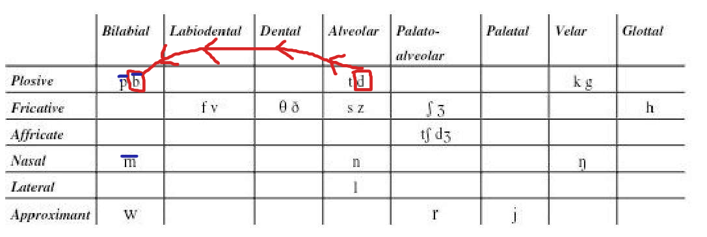
/t/ + /p,m,b/ = /p/ that man /ðæt mæn/ → /ðæp mæn/
that boy /ðæt bɔɪ/ → /ðæp bɔɪ/
white paper /waɪt ˈpeɪpə/ → /waɪp ˈpeɪpə/
don't be late /dəʊnt biː leɪt/ → /dəʊmp biː leɪt/
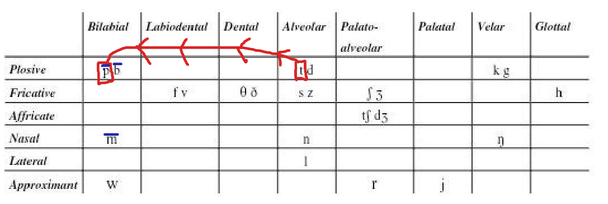
/n,ŋ/ + /p,m,b/ = /m/ ten players /ten ˈpleɪəz/ → /tem ˈpleɪəz/
in my /ɪn maɪ/ → /ɪm maɪ/
one moment /wʌn ˈməʊmənt/ → /wʌm ˈməʊmənt/
can be /kæn biː/ → /kæm biː/
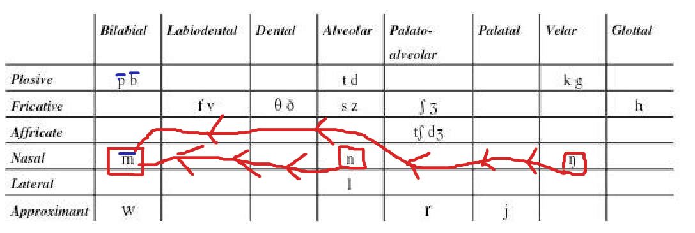
Alveolarization
/ŋ/ + /t,d,n/ = /n/ learning to drive /ˈlɜːnɪŋ tə draɪv/ → /ˈlɜːnɪntə draɪv/
going to /ˈgəʊɪŋ tə/ → /ˈgəʊɪntə/
wrong number /rɒŋ ˈnʌmbə/ → /rɒn ˈnʌmbə/
sing to me /sɪŋ tə miː/ → /sɪn tə miː/
long time /lɒŋ taɪm/ → /lɒn taɪm/
long day /lɒŋ deɪ/ → /lɒn deɪ/
kingdom /ˈkɪŋdəm/ → /ˈkɪndəm/
something to eat /ˈsʌmθɪŋ tə iːt/ → /ˈsʌmθɪn tə iːt/
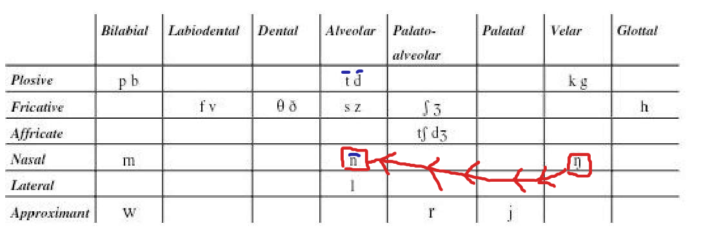
Palato-alveolarization
/d/ + /j/ = /dʒ/ did you /dɪd juː/ → /dɪdʒuː/
would you /wʊd juː/ → /wʊdʒuː/
could you /kʊd juː/ → /kʊdʒuː/
need you /niːd juː/ → /niːdʒuː/
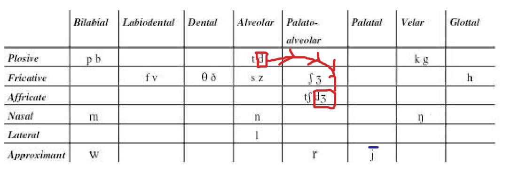
/t/ + /j/ = /tʃ/ want you /wɒnt juː/ → /wɒntʃuː/
don't you /dəʊnt juː/ → /dəʊntʃuː/
can't you /kɑːnt juː/ → /kɑːntʃuː/
meet you /miːt juː/ → /miːtʃuː/
last year /lɑːst jɪə/ → /lɑːstʃɪə/
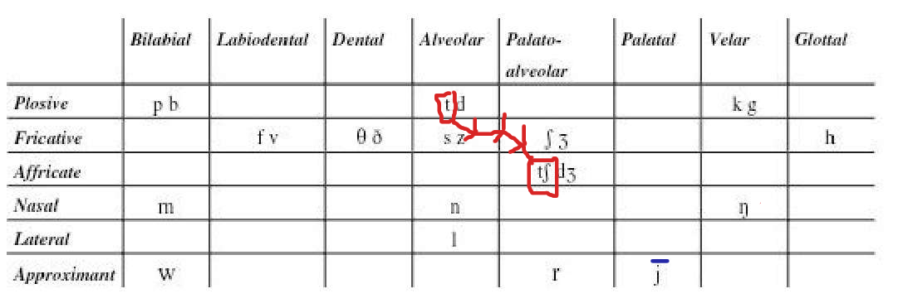
/s/ + /ʃ,tʃ,dʒ,j/ = /ʃ/ this shop /ðɪs ʃɒp/ → /ðɪʃɒp/
miss you /mɪs juː/ → /mɪʃuː/
this year /ðɪs jɪə/ → /ðɪʃɪə/
nice shoes /naɪs ʃuːz/ → /naɪʃuːz/
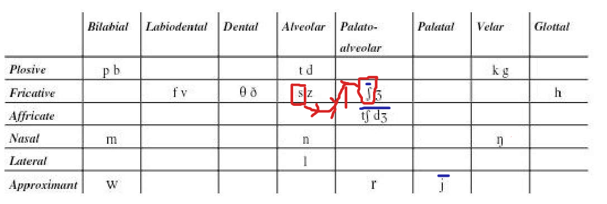
/z/ + /ʃ,tʃ,j/ = /ʒ/ has she /hæz ʃiː/ → /hæʒʃiː/
does she /dʌz ʃiː/ → /dʌʒʃiː/
as you like /əz juː laɪk/ → /əʒuː laɪk/
is your /ɪz jɔː/ → /ɪʒɔː/
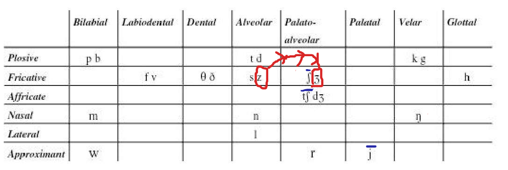
Velarization
/t/ + /k,g/ = /k/ that girl /ðæt gɜːl/ → /ðæk gɜːl/
white coat /waɪt kəʊt/ → /waɪk kəʊt/
hot cakes /hɒt keɪks/ → /hɒk keɪks/
it came /ɪt keɪm/ → /ɪk keɪm/
sweet girl /swiːt gɜːl/ → /swiːk gɜːl/
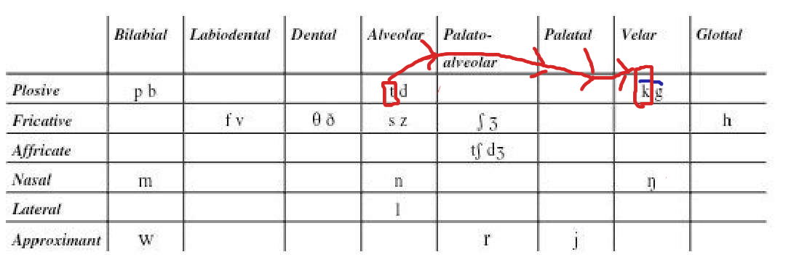
/d/ + /k,g/ = /g/ good guy /gʊd gaɪ/ → /gʊg gaɪ/
red car /red kɑː/ → /reg kɑː/
bad cold /bæd kəʊld/ → /bæg kəʊld/
could go /kʊd gəʊ/ → /kʊg gəʊ/
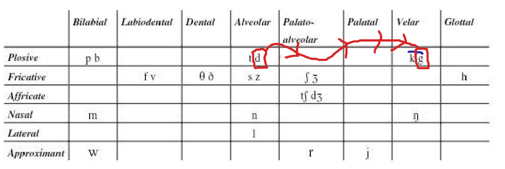
/n/ + /k,g/ = /ŋ/ ten cups /ten kʌps/ → /teŋ kʌps/
in case /ɪn keɪs/ → /ɪŋ keɪs/
sun cream /sʌn kriːm/ → /sʌŋ kriːm/
green grass /griːn grɑːs/ → /griːŋ grɑːs/
own goal /əʊn gəʊl/ → /əʊŋ gəʊl/
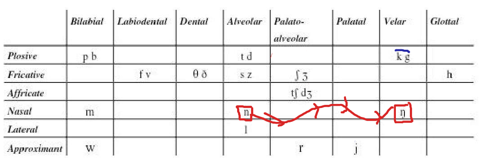
6 · Intrusive R and Linking R
Linking R
The word is spelled with an “r” (or “re”) at the end — far, four, here, better, mother. Said alone, or before a consonant, the /r/ is silent. But when the next word begins with a vowel, that /r/ is pronounced and “links” the two words together. The /r/ was always historically there; it is simply kept.
- far away /fɑː əˈweɪ/ → /fɑːr əˈweɪ/
- four apples /fɔː ˈæpl̩z/ → /fɔːr ˈæpl̩z/
- here and there /hɪə ənd ðeə/ → /hɪər ənd ðeə/
- better and better /ˈbetə ənd ˈbetə/ → /ˈbetər ənd ˈbetə/
- mother and father /ˈmʌðə ənd ˈfɑːðə/ → /ˈmʌðər ənd ˈfɑːðə/
- her own /hɜː əʊn/ → /hɜːr əʊn/
- your uncle /jɔː ˈʌŋkl̩/ → /jɔːr ˈʌŋkl̩/
- more or less /mɔː ɔː les/ → /mɔːr ɔː les/
- after all /ˈɑːftə ɔːl/ → /ˈɑːftər ɔːl/
- a pair of shoes /ə peə əv ʃuːz/ → /ə peər əv ʃuːz/
Intrusive R
Here there is no “r” in the spelling at all. When a word ends in a vowel sound (usually /ə/, /ɑː/, /ɔː/, /ɪə/, /eə/) and the next word begins with a vowel, speakers insert an /r/ by analogy with the linking-r rule, to avoid an awkward break between two vowels.
- law and order /lɔː ənd ˈɔːdə/ → /lɔːr ənd ˈɔːdə/
- the idea of it /ði aɪˈdɪə əv ɪt/ → /ði aɪˈdɪər əv ɪt/
- China and India /ˈtʃaɪnə ənd ˈɪndɪə/ → /ˈtʃaɪnər ənd ˈɪndɪə/
- I saw it /aɪ sɔː ɪt/ → /aɪ sɔːr ɪt/
- drawing /ˈdrɔːɪŋ/ → /ˈdrɔːrɪŋ/
- vanilla ice cream /vəˈnɪlə aɪs kriːm/ → /vəˈnɪlər aɪs kriːm/
- media event /ˈmiːdɪə ɪvent/ → /ˈmiːdɪər ɪvent/
- Anna and Paul /ˈænə ənd pɔːl/ → /ˈænər ənd pɔːl/
- the sofa is new /ðə ˈsəʊfə ɪz njuː/ → /ðə ˈsəʊfər ɪz njuː/
Linking R vs. Intrusive R — the difference
- Linking R: the “r” exists in the spelling — it is an underlying /r/ that is simply not pronounced in isolation. Pronouncing it before a vowel is “linking”.
- Intrusive R: there is no “r” in the spelling — the /r/ is added by analogy, to smooth the vowel-to-vowel transition.
- Both happen in the same environment (word ending in a vowel + word beginning with a vowel).
7 · Transcription hints
Practical tips for making transcriptions, so you make sure you don’t mess up:
- Use / / for broad (phonemic) and [ ] for narrow (allophonic) transcription.
- Always mark primary stress ˈ before the stressed syllable.
- Transcribe what you hear, not the spelling (for example ‘going to’ = /ˈɡəʊɪŋ tə/).
- There are no capital letters, commas, full stops/periods, question marks in transcriptions.
- The symbol | is used to mark a point where a speaker of the text might introduce a brief pause. Oftentimes this coincides with a place where a punctuation mark is present on the text, but not always.
- * is used to indicate that the following word is a name.
- Many words in connected speech are pronounced (and should be transcribed) differently in different environments.
- Be careful to think about how speech sounds and to avoid being misled by the spelling.
- Sometimes the ordinary spelling version uses letters which do not correspond to any sound at all, so they shouldn’t appear in transcription.
/ / = broad (phonemic)
[ ] = narrow (allophonic)
ˈ = primary stress
| = brief pause
* = the next word is a name.